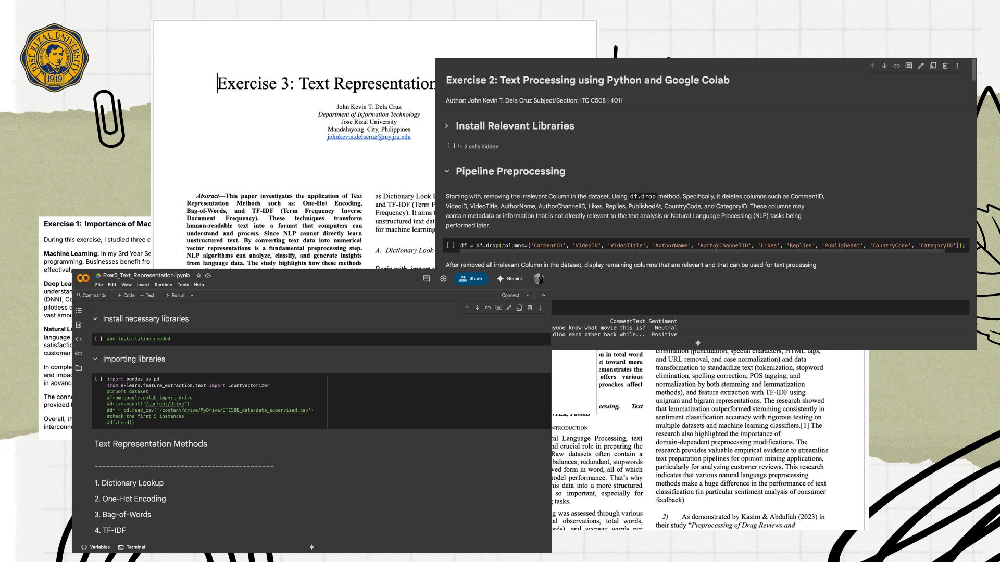

Preliminary Term Reflection
- During the preliminary period of this course, I was introduced to the foundations of Artificial Intelligence (AI), Deep Learning (DL), and Natural Language Processing (NLP). I learned how they interconnected to each other. Along side the lectures and research, I also apply it on laboratory exercises, written works, and exams that helped me to connect my theory to hands-on practice.
- From the lectures, I learned the basic concept of ML and AI, particularly in the goal of AI and how supervised and unsupervised learning solve different types of problems. I also understood what is Deep Learning and the role of it in handling complex using advanced algorithms like CNN, RNN, and LSTM, this widely used in a field like image identification, natural language recognition, and etc. Moreover, I realized how Natural Language Processing enables computers to understand, interpret, and generate human language, especially through techniques text preprocessing, text representation, and Named Entity Recognition (NER). These lessons help me clearly understand how these three interconnected and supports real-world applications.
- The knowledge that I acquired in lectures, I apply it through the laboratory exercises and written work, I practiced converting unstructured text to uniform format using text preprocessing pipelines like lowercasing, special character removal, stop word removal, and tokenization, to ensure the consistency of the vocabulary and reduce noise. Along side preprocessing, I also performed text representation to convert text into numerical representation using One-Hot Encoding, Bag-of-Words, TF-IDF, and Word Embeddings, so it become easier for computer to understand it. In the written work, I applied the manual annotation and build spaCy model (automated entity recognition), then compared spaCy model results and manual annotation (gold standard) result, which gave me practical insight into model evaluation.
- The preliminary exam challenged me to express the knowledge that I learned throughout the exercises, the hardest question for me is the number three because I didn’t properly answer the question particularly in “what new nlp task that I learned and why it use it in that exercise and how it helps”, due to being irresponsible student I only applied what being taught to us throughout the lectures.
- Overall, the preliminary period allowed me to clearly understand the concepts of AI, DL, and NLP. I realized the benefits of text preprocessing before using it in NLP task. As well as, the importance of data representation in building models, the role of Deep Learning in solving complex problems and how NLP bridges the gap between the human language with machine learning. These knowledge and experiences helped me develop both technical-skills and critical thinking, which preparing me for more advanced topics during this midterm.